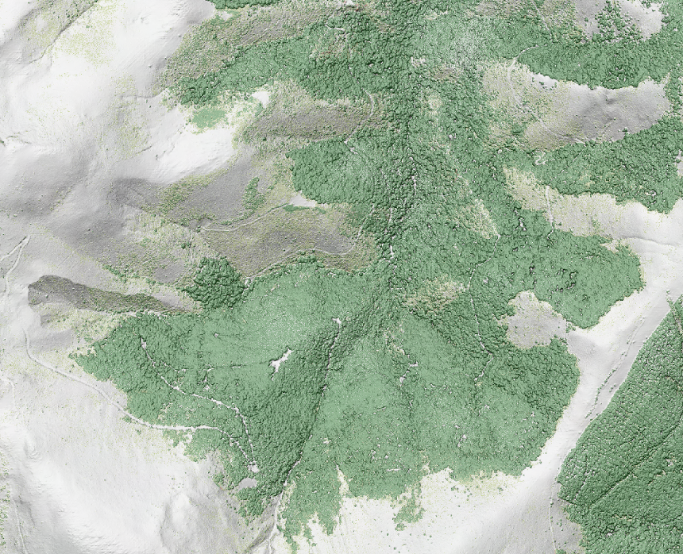
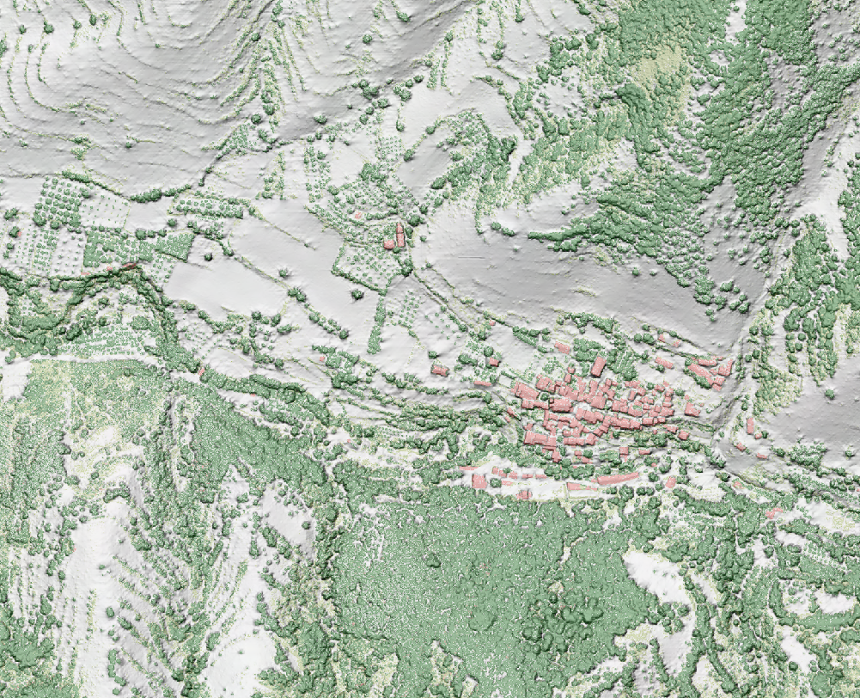
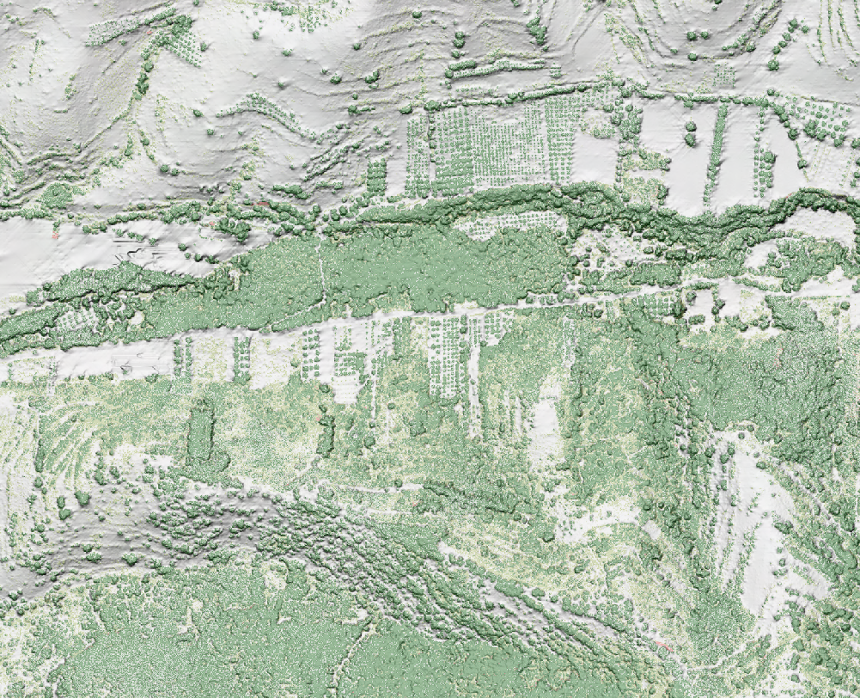

Digital Surface Model (DSM)
It is possible to generate the Digital Surface Model (MDS) using the classified LAS files.
In this case, the 'GridSurfaceCreate' tool is also used to generate the regular data grid that will represent, in raster format, the surface of the ground together with the objects that are on it.
This command calculates the elevation of each grid cell using the LiDAR points classified as:
| Classification | Values |
|---|---|
| 2 | Terrain |
| 3 | Low vegetation |
| 4 | Medium vegetation |
| 5 | High vegetation |
| 6 | Building |
| 9 | Water |
In the case that the cell does not contain any points, it generates a value by interpolation, from the neighboring cells.
A cell size of 1x1 is defined, with units in meters and in the UTM coordinate system (which corresponds to code 1) and zone 30. The input files are in LAS format:
-
It is converted to LAS format with the following command:
las2las [directory][file-name].laz -olasGridSurfaceCreate [switches] surfacefile cellsize xyunits zunits coordsys zone horizdatum vertdatum datafileGridSurfaceCreate /class:(2,3,4,5,6,9) [surfacefile].dtm 1 m m 1 30 0 0 [directory][file-name].las
-
It is converted to ASCII format (.asc) with
dtm2asciicommand:dtm2ascii [directory][file-name].dtm [file-name].asc
Rendering
In order to obtain a rendering of the digital surface model, colored according to the classification values, a relief shading image is first generated from the DSM, by means of the procedure described in section DTM/DSM > Shaded relief generation (hillshade)
In a second process, LAS files are rasterized, coloring the tiles according to their classification value.
Once done, the raster files of the shading of the relief and the colored images generated from the LAS files are merged, applying a certain percentage of transparency, in order to preserve the details of the relief.
Below you can see some examples of the results obtained for different geographical environments:


